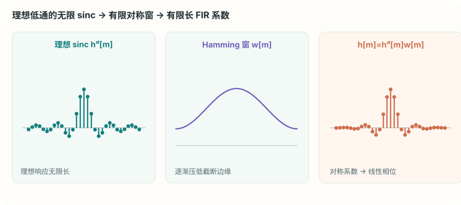
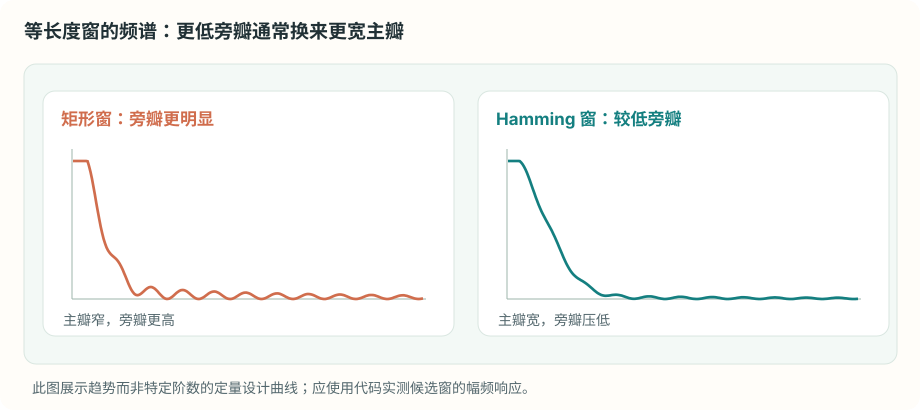

Signal · System · Insight / 09
FIR 设计：线性相位来自对称，窗函数决定折中
把无限长理想低通变成有限长度、可验证的数字滤波器。
一个理想低通为什么不可能原样放进实时处理器？
理想数字低通的频率响应像一道完美的门：低于指定截止频率时全部通过，超过时完全阻断。然而，它的逆 DTFT 是无限长 sinc 序列，向正负时间延伸，既不因果也无法以有限系数直接执行。FIR 滤波器设计的核心问题因此不是如何“画出理想矩形”，而是怎样用有限 taps，在过渡带、阻带旁瓣、群延迟与计算成本之间建立可检验的折中。
FIR（Finite Impulse Response）系统的冲激响应只有有限个非零样本。若系数有限，标准零状态 FIR LTI 卷积是 BIBO 稳定的；但“有限冲激响应”并不自动意味着线性相位。后者需要额外的实系数对称/反对称条件。
从有限卷积公式理解 taps 与阶数
令 M 为 taps 的数量、滤波器阶数为 M−1。第 n 个输出是输入在当前及过去 M−1 个时刻的加权求和：
式（1）：M 是系数数量，不是滤波器阶数；范围外输入按零延拓处理。
例如三点均值 h=[1/3,1/3,1/3] 就是长度 3、阶数 2 的 FIR。没有反馈回路不代表数值系统永远无误差：定点乘加需要考虑累加器位宽、舍入误差、系数精度、缓存布局和处理延迟。
线性相位到底由什么保证？
对实系数 FIR，若 h[n]=h[M−1−n]，则时域系数关于中心 α=(M−1)/2 对称，其频率响应可写成固定线性相位因子乘实值幅度。离开幅度为零的频率、并正确处理相位跳变后，群延迟是 α 个样本；它可以是半整数，不必是整数。
式（2）：τ 为样本数；相位性质只在频率响应非零的区间有直接含义。
| 类型 | 系数关系 | taps 数 M | 结构性零点 |
|---|---|---|---|
| I | 偶对称 | 奇数 | 无强制端点零点 |
| II | 偶对称 | 偶数 | ω=π |
| III | 奇对称 | 奇数 | ω=0、π |
| IV | 奇对称 | 偶数 | ω=0 |
Type II 偶对称 FIR 在 Nyquist 点的频率响应必为零，不能用于要求 Nyquist 仍有非零增益的高通设计。SciPy 的 firwin 明确区分 Type I（奇数 taps）与 Type II（偶数 taps）并执行相应限制。
无限 sinc 怎样变成对称的有限系数？
设数字截止角频率满足 0<ωc<π。理想低通的零相位冲激响应是 sinc 形式。选定奇数长度 M，把中心移到 α=(M−1)/2，再从中心两侧各截取若干项；使用对称窗 w[n] 平滑衰减边缘，可得到因果有限系数。
式（3）：n=α 时取连续极限 ωc/π；后续只保留 n=0,…,M−1。
式（4）：窗长度与 FIR taps 一致，范围外 h[n] 设为 0。

本章例子选择奇数 M=31、ωc=0.35π 并使用 Hamming 窗 w[n]=0.54−0.46cos(2πn/(M−1))。再将系数除以总和，使 DC 增益为 1。这里是确定性教学设计，并不声称它恰好满足某款音频设备的阻带规范。
压低旁瓣为什么往往要牺牲过渡带？
时域系数逐点乘窗，对应频域中理想响应与窗频谱的卷积。矩形窗直接截断，通常有较窄主瓣但相对明显的旁瓣；Hamming 等平滑窗降低旁瓣，同时展宽主瓣。最终滤波器的阻带衰减还取决于截止频率与 taps 数，不能简单把窗频谱的旁瓣数字直接当成设计合格率。

如果严格给定通带波动、阻带衰减与两条频带边缘，可以进一步使用频率采样法或 Parks–McClellan 极小化最大加权误差等方式设计 FIR。但它们的最优性只相对于所声明的目标函数和约束成立，不能笼统说“任何等波纹设计都优于窗函数法”。
同样叫 cutoff，为什么 FIR 与 Butterworth 不能直接比较？
scipy.signal.firwin 文档规定，标量 cutoff 对窗函数设计对应半幅值 -6 dB 的点；而 scipy.signal.butter 的 Butterworth 临界频率对应半功率 -3 dB 的点。把两者都设为 1000 Hz 并不能声称它们有相同的通带性能。
式（5）：20log10 幅度比，分别约 -6.02 dB 与 -3.01 dB。
当使用 fs=8000 时，cutoff 与 fs 使用相同单位 Hz；不设置 fs 时使用归一化频率约定。还要注意 numtaps 是 taps 数，而不是滤波器阶数。
调整 11–41 taps，观察过渡与延迟
可交互实验：调整 FIR 滤波器的 taps 数
固定数字截止角频率 0.35π 并调整 M；曲线来源于系数求和，不依赖网络。
这组滑块在固定 ωc=0.35π 条件下重新计算 Hamming FIR，展示 DC 增益、Nyquist 增益与理论线性相位群延迟。增加 taps 会影响主瓣与延迟，但仍需用完整通带/阻带采样检验是否达到设计目标。
from math import pi,sin,cos
def lowpass(M,wc):
mid=(M-1)/2
taps=[]
for n in range(M):
m=n-mid
ideal=wc/pi if m==0 else sin(wc*m)/(pi*m)
window=.54-.46*cos(2*pi*n/(M-1))
taps.append(ideal*window)
dc=sum(taps)
return [v/dc for v in taps]
h=lowpass(31,.35*pi)
assert max(abs(a-b) for a,b in zip(h,reversed(h)))<1e-12完整可运行测试（09_fir.py）还校验 DC 为 1、Nyquist 处较低响应和相位对称性。
FIR 的四项设计边界
- 有限系数保障标准卷积的 BIBO 稳定，不排除实际定点溢出问题。
- 线性相位依赖实系数的对称/反对称结构，而不是 FIR 名称。
- Type II Nyquist 强制零点及 Type III/IV DC 强制零点影响设计类型。
- 窗函数的旁瓣与主瓣是折中；截止点的数学定义必须依据所用函数。
自检：若只允许 8 个样本线性相位延迟，奇数 taps 的对称 FIR 最多允许多大的 M？为什么偶数 taps 的 Type II 不能在 ω=π 处放大高频？
参考资料与设计接口
- SciPy · firwin：对称 FIR、Type I/II、-6 dB cutoff 与 fs 规则。
- MIT OCW · Discrete-Time Signal Processing：窗函数与数字频率理论。
- SciPy · firwin2：另一类指定频率响应的 FIR 设计路线。